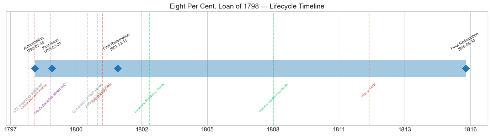
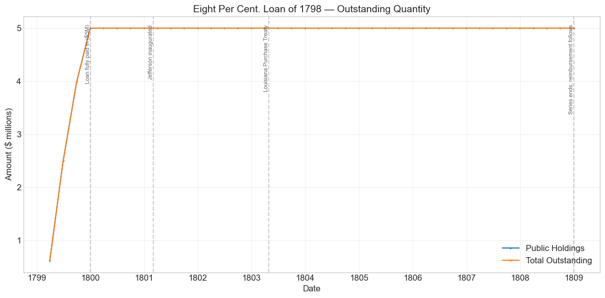
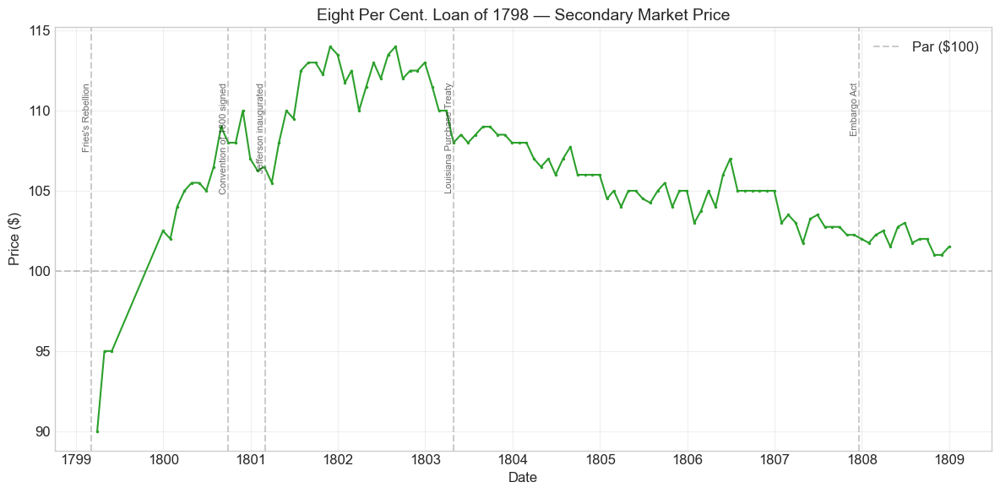
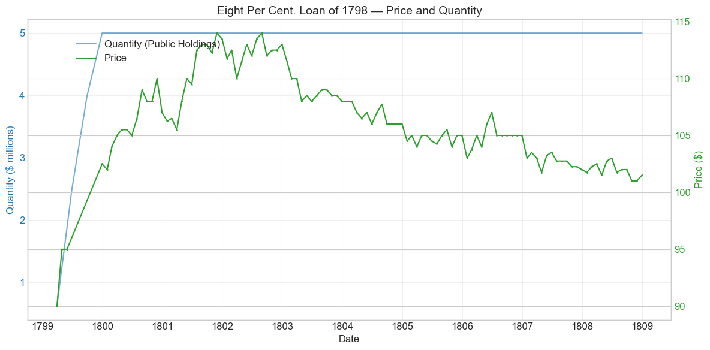
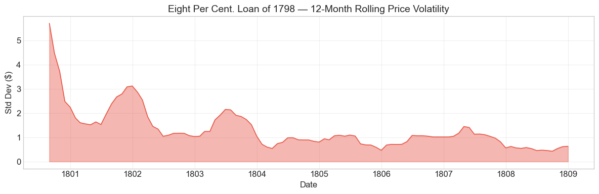
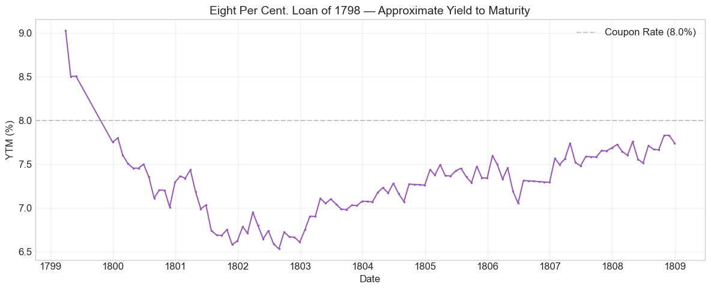

Bond Biography: Eight Per Cent. Loan of 1798#
“Millions for Defense”: The Republic’s First War Loan#
An enhanced chapter from the Hall-Payne-Sargent US Federal Bond Database (2,857 issues, 1776–1960)
Bond ID (L1): 20042 | Category: Interest Bearing > Marketable > Long Term Bond
import pandas as pd
import numpy as np
import matplotlib.pyplot as plt
import matplotlib.patches as mpatches
import datetime
import warnings
warnings.filterwarnings('ignore')
plt.style.use('seaborn-v0_8-whitegrid')
plt.rcParams.update({'figure.figsize': (12, 6), 'font.size': 12,
'axes.titlesize': 14, 'axes.labelsize': 12})
# Load the bond database
store = pd.HDFStore('../data/BondDF.h5', mode='r')
BondList = store['BondList']
BondQuant = store['BondQuant']
BondPrice = store['BondPrice']
store.close()
BondQuant_T = BondQuant.transpose()
BondPrice_T = BondPrice.transpose()
bond_id = 20042
print(f'Loaded data for: Eight Per Cent. Loan of 1798 (ID: 20042)')
/Users/thomassargent/anaconda3/lib/python3.9/site-packages/pandas/core/arrays/masked.py:60: UserWarning: Pandas requires version '1.3.6' or newer of 'bottleneck' (version '1.3.5' currently installed).
from pandas.core import (
Loaded data for: Eight Per Cent. Loan of 1798 (ID: 20042)
The First Borrowing of the Crisis#
On April 3, 1798, President Adams laid before Congress the decoded dispatches of the XYZ Affair: agents of the French foreign minister Talleyrand had demanded a bribe and a loan before they would so much as receive the American envoys sent to Paris. The publication of the dispatches transformed American politics overnight. “Millions for defense, but not one cent for tribute” became the cry of the hour, and in the spring and summer of 1798 a Federalist Congress created the Department of the Navy (April 30), authorized the construction and purchase of frigates, expanded the army, abrogated the treaties of 1778, and let loose American warships and privateers on French cruisers. The Quasi-War — the undeclared naval war with France of 1798–1800 — had begun.
Wars must be paid for before taxes can catch up with them. Two days after apportioning the republic’s first direct tax ($2 million on houses, lands, and slaves, July 14, 1798), Congress passed the act of July 16, 1798, authorizing the President to borrow up to $5,000,000 for the new military establishment. The loan that Secretary of the Treasury Oliver Wolcott Jr. raised under that act — contracted at the extraordinary coupon of eight per cent, sold at par, and paid in by subscribers in installments through 1799 — is the Eight Per Cent. Loan of 1798, Bond ID 20042 in our database.
This bond is the first of the two Quasi-War eight per cent loans, and this chapter is written as the companion piece to the chapter on its younger sibling, the Eight Per Cent. Loan of 1800 (Bond ID 20043), which tells the shared story of Federalist war finance, the Republican attack on the “eight per cent loans,” and Albert Gallatin’s later reimbursement program at full length. What belongs distinctively to the 1798 loan is priority and price: it was the first substantial war loan floated under the Constitution, it was sold at par into the most hostile market the young federal credit had yet faced, and its earliest quotations — as low as $90 in March 1799 — record the one moment in the pair’s combined history when even eight per cent looked barely enough. Where the Loan of 1800, born as peace was being signed, never traded below par, the Loan of 1798 had to earn its premium. The two loans together bracket the republic’s first market-priced war-risk premium; this chapter reads that record from the 1798 side.
The Act of July 16, 1798, and the Price of Money#
The terms were stark by the standards of the funded debt. Where the Hamilton stocks of 1790 paid 6, 6-deferred, and 3 per cent, the new loan carried 8 per cent, quarterly, in coin, on a fifteen-year term. Why the Treasury had to pay such a rate — a broken 6% benchmark, thin domestic capital markets, closed foreign ones, and genuine war risk — is examined at length in the companion chapter on the Eight Per Cent. Loan of 1800; the argument is not repeated here. What matters for the 1798 loan is when it was sold: at the very bottom of the market.
In the summer of 1798 the government’s own funded 6% stocks were trading in the 70s and low 80s — their deepest post-1792 trough, as the companion chapters on the Sixes and Threes of 1790 show. At those prices a new 6% loan could only have been placed at a ruinous discount. The act of July 16 therefore left the rate to be settled by what the market would bear, and the market’s answer was eight. Even so, the database records the loan as sold at par (100) — no premium, no cushion. The subscribers of 1798–99 were lending face value to a government at the edge of open war with a great European power, a government whose customs revenues depended on the very ocean commerce the French were raiding, in exchange for a coupon that the secondary market promptly judged to be only just sufficient: the first recorded quotation, in March 1799, is $90.
Contrast the sequel. By the time the additional borrowing under the act of May 7, 1800 was placed, Napoleon’s coup of 18 Brumaire had brought to power a First Consul who wanted the American quarrel ended, and the 1800 tranche went off at a premium of 5¾ per cent. Same government, same coupon, same fifteen-year term — but two years apart in war risk. The gap between par in 1798 and 105.75 in 1800 is the primary market’s own measure of what the Quasi-War cost the Treasury at its height; the gap between par and the $90 secondary quotation of March 1799 is the aftermarket’s second opinion that the Treasury had, if anything, underpaid.
Historical Context#
The following major events occurred during this bond’s lifetime:
Date |
Event |
Category |
|---|---|---|
1798-07-07 to 1800-09-30 |
Quasi-War with France |
War |
1799-03 |
Fries’s Rebellion against the direct tax |
Crisis |
1800-09-30 |
Convention of 1800 (Mortefontaine) signed |
Diplomacy |
1801-03-04 |
Jefferson inaugurated; Gallatin to Treasury |
Politics |
1801-05-10 to 1805-06-10 |
First Barbary War |
War |
1803-04-30 |
Louisiana Purchase Treaty |
Legislation |
1803-12-20 |
Louisiana Territory transferred to US |
Other |
1807-12-22 |
Embargo Act |
Legislation |
1811-03-03 |
First Bank charter expires |
Legislation |
1812-06-18 to 1815-02-18 |
War of 1812 |
War |
1816-04-10 |
Second Bank of the US chartered |
Legislation |
The Quasi-War: the bond’s reason for being#
Unlike its 1800 sibling, which was issued in the same month its war ended, the Loan of 1798 lived through the fighting. Its subscription was filled in installments during 1799 while Truxtun’s frigates were engaging French cruisers in the Caribbean, while the direct tax was provoking Fries’s Rebellion in eastern Pennsylvania, and while nobody knew whether the undeclared naval war would become a declared general one. The price series wears that uncertainty openly: quotations of $90 and $95 in the spring of 1799, a six-month gap in the record, and only by December 1799 a price above par. Thereafter the war news improved in step with the price — Napoleon’s accession (November 1799) opened the door to negotiation, the Convention of Mortefontaine (conventionally dated September 30, 1800) closed the quarrel, and the bond spent 1800–1802 climbing from $102 to a peak of $114.
The transfer of power: a stress test passed#
The disputed election of 1800 put the Federalists’ creditors in an awkward spot: the incoming Republicans had campaigned against this very loan. The market’s verdict on the danger is visible in the data — there was none. The bond rose through the electoral crisis and the inauguration of March 1801, reaching its all-time peak of $114 in November 1801, once it was plain that Jefferson and Gallatin meant to service the Federalist debt punctually and retire it early rather than repudiate it.
The First Barbary War and the Embargo: non-events for a redemption-bound bond#
The Tripolitan war (1801–1805) was fought by ships the Quasi-War loans had helped pay for, but its modest cost, covered largely by the earmarked Mediterranean Fund duties, left no mark on the price series, which glides down its premium-decay ramp throughout. Even the Embargo of December 1807, which struck at the customs revenues underpinning the whole federal credit, barely disturbed a bond by then trading within two points of par and visibly bound for early reimbursement.
The War of 1812: a bond already gone#
Price quotations cease in December 1808, and the recorded quantity series ends the same month; the reimbursement of the eight per cent stocks under Gallatin’s program followed at just this time (see the quantity analysis below). By the time war with Britain came in June 1812, the 8s of 1798 survived only as unclaimed certificates on the Treasury’s ledgers — which is why the database’s 1816 “final redemption” date, like the 1835 date on the 1800 loan, marks an administrative tail rather than an economic life. Jefferson and Gallatin had deliberately cleared the government’s most expensive debt before the next war arrived.
# Bond Lifecycle Timeline
fig, ax = plt.subplots(figsize=(14, 4))
# Key dates
dates = [('Authorization', '1798-07-16'), ('First Issue', '1799-03-31'), ('First Redemption', '1801-12-31'), ('Final Redemption', '1816-06-30')]
events = [('XYZ dispatches published', '1798-04-03', 'other'), ('Quasi-War with France', '1798-07-07', 'war'), ("Fries's Rebellion (direct tax)", '1799-03-07', 'crisis'), ('Convention of 1800 signed', '1800-09-30', 'other'), ('Jefferson inaugurated', '1801-03-04', 'other'), ('First Barbary War', '1801-05-10', 'war'), ('Louisiana Purchase Treaty', '1803-04-30', 'legislation'), ('Gallatin reimburses the 8s', '1808-06-30', 'legislation'), ('War of 1812', '1812-06-18', 'war')]
import matplotlib.dates as mdates
from datetime import datetime
# Plot bond lifetime bar
d0 = datetime.strptime(dates[0][1], '%Y-%m-%d')
d1 = datetime.strptime(dates[-1][1], '%Y-%m-%d')
ax.barh(0, (d1 - d0).days, left=mdates.date2num(d0), height=0.3,
color='#1f77b4', alpha=0.4, label='Bond Lifetime')
# Mark key dates
for label, date_str in dates:
d = datetime.strptime(date_str, '%Y-%m-%d')
ax.plot(mdates.date2num(d), 0, 'D', color='#1f77b4', markersize=10)
ax.annotate(f'{label}\n{date_str}', (mdates.date2num(d), 0.25),
ha='center', va='bottom', fontsize=8, rotation=30)
# Mark historical events
colors = {'war': '#e74c3c', 'crisis': '#9b59b6', 'legislation': '#2ecc71', 'other': '#95a5a6', 'monetary': '#f39c12'}
for name, date_str, cat in events:
d = datetime.strptime(date_str, '%Y-%m-%d')
ax.axvline(mdates.date2num(d), color=colors.get(cat, 'gray'), alpha=0.5, linestyle='--')
ax.annotate(name, (mdates.date2num(d), -0.25), ha='center', va='top',
fontsize=7, rotation=45, color=colors.get(cat, 'gray'))
ax.set_yticks([])
ax.xaxis.set_major_formatter(mdates.DateFormatter('%Y'))
ax.set_title('Eight Per Cent. Loan of 1798 — Lifecycle Timeline')
ax.set_ylim(-1, 1)
plt.tight_layout()
plt.show()

Bond Features#
Feature |
Detail |
|---|---|
Name |
Eight Per Cent. Loan of 1798 |
Authorizing Act |
July 16, 1798 |
First Issue Date |
March 31, 1799 |
Term |
15 years |
First Redemption |
December 31, 1801 |
Final Redemption |
June 30, 1816 |
Coupon Rate |
8.0% per annum |
Payment Frequency |
Quarterly (4 times/year) |
Callable |
No |
Payable in Coin |
Yes |
Amount Issued |
$5.00 million (fully paid in by December 1799) |
Price Sold |
Par (100) |
Two entries deserve comment. The sale at par — where the 1800 tranche fetched 105.75 — is the primary-market fingerprint of 1798’s darker circumstances: with the war scare at its height, the Treasury got face value for an 8% coupon and not a cent more, and the secondary market briefly marked even that down to $90. And the final redemption date of June 30, 1816 recorded in the database reflects, as with the 1800 loan, the long administrative tail of unclaimed certificates rather than the loan’s economic life, which — as the price and quantity series below make plain — was effectively over when quotations ceased at the end of 1808 and the Treasury’s reimbursement of the eight per cent stocks ran its course.
# Display full bond features from database
row = BondList.loc[20042]
display_cols = [
"Treasury's Name Of Issue", 'Authorizing Act', 'Term Of Loan',
'First Issue Date', 'First Redemption Date', 'Final Redemption Date',
'Coupon Rate', 'Coupons Per Year', 'Callable', 'Coin',
'Authorized Amount', 'Price Sold'
]
print('Bond Features from Database:')
print('=' * 55)
for col in display_cols:
if col in row.index:
print(f' {col:<30} {row[col]}')
Bond Features from Database:
=======================================================
Treasury's Name Of Issue Eight Per Cent. Loan of 1798
Authorizing Act July 16, 1798
Term Of Loan 15 years
First Issue Date 1799-03-31 00:00:00
First Redemption Date 1801-12-31 00:00:00
Final Redemption Date 1816-06-30 00:00:00
Coupon Rate 8.0
Coupons Per Year 4.0
Callable 0.0
Coin 1.0
Authorized Amount nan
Price Sold 1.0
Bond Quantity Over Time#
The bond’s outstanding quantity peaked at $5.00 million on December 31, 1799 — the full amount authorized by the act of July 16, 1798 — after building up through 1799 in subscription installments. The recorded quantity data span 1799-03-31 to 1808-12-31 (40 quarterly observations).
# Bond quantity over time
fig, ax = plt.subplots(figsize=(12, 6))
for stype in ['Public Holdings', 'Total Outstanding']:
try:
s = BondQuant_T.loc[(20042, stype)]
s = s[s.notna()]
if len(s) > 0:
ax.plot(s.index, s.values / 1e6, marker='.', markersize=3, linewidth=1.5, label=stype)
except KeyError:
pass
ax.set_title('Eight Per Cent. Loan of 1798 — Outstanding Quantity')
ax.set_xlabel('Date')
ax.set_ylabel('Amount ($ millions)')
ax.legend()
ax.grid(True, alpha=0.3)
events = {'1799-12-31': 'Loan fully paid in ($5M)', '1801-03-04': 'Jefferson inaugurated', '1803-04-30': 'Louisiana Purchase Treaty', '1808-12-31': 'Series ends; reimbursement follows'}
for date_str, label in events.items():
d = pd.Timestamp(date_str)
ax.axvline(d, color='gray', alpha=0.4, linestyle='--')
ax.text(d, ax.get_ylim()[1]*0.97, label, rotation=90, va='top', ha='right', fontsize=8, alpha=0.7)
plt.tight_layout()
plt.show()

Quantity Analysis#
The quantity series has only two phases in the recorded window — a rapid fill and a long, perfectly flat plateau — and one important absence.
1. The installment fill (1799). Like most eighteenth-century subscription loans, the $5 million was not paid over in a lump. The database’s first observation, $612,712.50 at the end of March 1799, is roughly the first installment; the series then jumps to $2.50 million by June, $3.99 million by September, and the full $5,000,000 by December 1799. These steps are the subscribers’ installment payments coming in over the course of the year — the auto-detected quantity “events” of +307%, +60%, and +25% in 1799 (see below) are this schedule, not fresh borrowing decisions. The government thus received its war money across 1799, precisely the year the naval war was most active.
2. The plateau (1800–1808). From December 1799 to the last observation in December 1808 the outstanding amount does not move: $5.00 million in every quarter. No sinking-fund nibbling is recorded against this stock in the database’s window — unlike the 1800 tranche, whose series shows small early reductions. A high-coupon stock trading at 105–114 was an expensive thing to buy in at market, and the loan’s contract fixed when reimbursement at par could begin; until then, the whole issue simply sat and drew its 8% in coin.
3. The unrecorded exit. Here the 1798 loan’s data differ tellingly from its sibling’s. The quantity series ends in December 1808 with the full $5 million still on the books — the wind-down itself is not captured in this bond’s recorded observations. The end of the series is not the end of the story but the beginning of its ending: quotations cease in the same month, and the Treasury’s reimbursement of the eight per cent stocks — the centerpiece of Gallatin’s policy of retiring the government’s dearest debt at the earliest contractual date, financed out of the customs surpluses of the neutral-trade boom — fell in precisely these years, principally 1807–1809. The companion chapter on the Eight Per Cent. Loan of 1800, whose quantity series does extend through the paydown, shows what that operation looked like from the inside: a collapse of the outstanding stock to a residue of unclaimed certificates, extinguished by the end of 1811. The 1798 loan went the same way, with its turn coming at the close of that window; the standard Treasury compilations (Bayley 1881; Gallatin’s reports in American State Papers: Finance) record it as paid off at par in cash.
No refinancing. As with the 1800 loan, there was no conversion or exchange into other securities — unlike the old 6s, which were exchanged into new stocks in 1807 and 1812, the 8s were simply paid off. The visible cash destruction of the Federalists’ most expensive legacy was the political point.
Secondary Market Prices#
Overall Statistics (1799-03-31 to 1808-12-31): Mean $106.16, Range $90.00–$114.00, Std Dev $4.15, 112 monthly observations.
By Period:
Period |
Mean |
Std |
Min |
Max |
Obs |
|---|---|---|---|---|---|
Issue to First Redemption (1799-03 to 1801-12) |
$106.50 |
$5.75 |
$90.00 |
$114.00 |
28 |
First Redemption to end of quotations (1802-01 to 1808-12) |
$106.05 |
$3.49 |
$101.00 |
$114.00 |
84 |
The price history divides into three legible movements — and the first is the one its 1800 sibling never had.
Below par at birth (1799). The first quotations, $90 in March 1799 and $95 in April–May, put the loan as much as ten per cent under its issue price while the subscribers were still paying in their installments. This is the sharpest fact in the series: with the Quasi-War at its height, an untried 8% coupon on the credit of the United States could be had at a discount. The record then falls silent for six months — quotations for June through November 1799 are missing, a reminder of how thin the market for a new issue could be — and when it resumes in December 1799 the bond stands at $102.50, above par for the first time. It never went below again.
The peace premium (1800–1802). From $102 at the start of 1800 the price climbed almost without interruption as the diplomatic sky cleared: $110 by November 1800 as news of the Convention of Mortefontaine spread, a brief pause around the disputed election, and then a run to the all-time peak of $114 in November 1801 — matched again in August 1802 — as the Jefferson administration’s punctual servicing of the Federalist debt removed the last political doubt. At $114 an 8% coupon yields about 7% on a current basis; the climb from 90 to 114 is the market repricing U.S. credit from wartime to peacetime rates. A subscriber of 1798 who held from par through the peak earned the eight per cent coin coupon and a fourteen per cent capital gain — the reward for bearing the war risk of 1798–99.
The long decay (1803–1808). From 1803 the price glides down the same smooth ramp as its sibling: $108–110 in 1803, $106–108 in 1804, $104–105 in 1805–06, $101–103.5 in 1807–08. As the companion chapter explains at length, this is premium amortization, not deteriorating credit — the textbook path of a high-coupon bond converging to par as an anticipated cash redemption approaches. Quotations cease in December 1808 at $101.50, with reimbursement at hand. Like the 1800 loan, the 8s of 1798 did not crash out of the market; they were paid out of it.
# Annotated price chart
fig, ax = plt.subplots(figsize=(12, 6))
s = BondPrice_T.loc[(20042, 'Average')]
s = pd.to_numeric(s, errors='coerce').dropna()
if len(s) > 0:
ax.plot(s.index, s.values, marker='.', markersize=3, linewidth=1.5, color='#2ca02c')
ax.axhline(100, color='black', alpha=0.2, linestyle='--', label='Par ($100)')
ax.set_title('Eight Per Cent. Loan of 1798 — Secondary Market Price')
ax.set_xlabel('Date')
ax.set_ylabel('Price ($)')
ax.legend()
ax.grid(True, alpha=0.3)
events = {'1799-03-07': "Fries's Rebellion", '1800-09-30': 'Convention of 1800 signed', '1801-03-04': 'Jefferson inaugurated', '1803-04-30': 'Louisiana Purchase Treaty', '1807-12-22': 'Embargo Act'}
for date_str, label in events.items():
d = pd.Timestamp(date_str)
ax.axvline(d, color='gray', alpha=0.4, linestyle='--')
ax.text(d, ax.get_ylim()[1]*0.97, label, rotation=90, va='top', ha='right', fontsize=8, alpha=0.7)
plt.tight_layout()
plt.show()

# Price and Quantity — dual-axis chart
fig, ax1 = plt.subplots(figsize=(12, 6))
# Quantity (left axis)
for stype in ['Public Holdings', 'Total Outstanding']:
try:
q = BondQuant_T.loc[(20042, stype)]
q = q[q.notna()]
if len(q) > 0:
ax1.plot(q.index, q.values / 1e6, color='#1f77b4', alpha=0.6, label=f'Quantity ({stype})')
break
except KeyError:
pass
ax1.set_xlabel('Date')
ax1.set_ylabel('Quantity ($ millions)', color='#1f77b4')
ax1.tick_params(axis='y', labelcolor='#1f77b4')
# Price (right axis)
ax2 = ax1.twinx()
p = BondPrice_T.loc[(20042, 'Average')]
p = pd.to_numeric(p, errors='coerce').dropna()
if len(p) > 0:
ax2.plot(p.index, p.values, color='#2ca02c', marker='.', markersize=2, label='Price')
ax2.set_ylabel('Price ($)', color='#2ca02c')
ax2.tick_params(axis='y', labelcolor='#2ca02c')
ax1.set_title('Eight Per Cent. Loan of 1798 — Price and Quantity')
ax1.grid(True, alpha=0.3)
fig.legend(loc='upper left', bbox_to_anchor=(0.1, 0.9))
plt.tight_layout()
plt.show()

Detected Price/Quantity Events#
The following significant movements were auto-detected, with causal analysis:
Date |
Type |
Change |
Explanation |
|---|---|---|---|
1799-04 |
price_spike |
+5.6% |
Recovery from the opening quotation of $90. The first prints of a new issue in a thin market were finding their level; as installments were paid in and the naval war went well for the new frigates, the discount narrowed to $95. With quotations this sparse, a single transaction could move the recorded monthly figure. |
1799-06 |
quantity_increase |
+307.3% |
Subscription installments, not new borrowing. The second wave of installment payments under the $5 million subscription brought the paid-in amount from $0.6 million to $2.5 million. |
1799-09 |
quantity_increase |
+59.9% |
Continuation of the installment schedule: paid-in stock reaches $3.99 million. |
1799-12 |
price_spike |
+7.9% |
Crossing par — with a caveat. The recorded jump from $95 to $102.50 spans a six-month gap in quotations (June–November 1799 are missing), so the “monthly” change actually accumulated over half a year. Substantively it tracks the turn in the war news: the naval campaign had swung America’s way, and Napoleon’s coup of 18 Brumaire (November 1799) installed a government in Paris that wanted the quarrel settled. |
1799-12 |
quantity_increase |
+25.3% |
The final installment: the loan reaches its full $5,000,000, where it remains for the rest of the recorded series. |
Note that all the detected events cluster in 1799, the loan’s first year; the following nine years produced none. After the wartime birth pangs, the largest monthly price move in either direction was small — the same serenity the companion chapter documents for the 1800 tranche. Where individual months show small unexplained wiggles, the likeliest culprit is the thinness of quotations in a $5 million issue concentrated in relatively few hands.
Price Volatility#
Maximum drawdown: -11.4% (from the peak of November 30, 1801 to the trough of October 31, 1808)
Average monthly return: +0.118%
Both statistics repay careful reading, and both differ instructively from the 1800 sibling’s. The “maximum drawdown” is, as with the 1800 loan, the scheduled melting of a redemption-bound premium rather than any loss of confidence — from $114 at the 1801 peak the bond glided to $101 as reimbursement at par approached, while its holders collected $8 a year in coin. But where the 1800 loan’s average monthly price return is negative (it was born at a premium and could only amortize), the 1798 loan’s is positive — because its series begins at $90. The early discount and its closure are the one genuinely risky, genuinely rewarded stretch in the pair’s combined history.
The rolling volatility chart tells the same story in one glance: elevated variability through the war-and-peace repricing of 1799–1802, then a long subsidence toward $1 as the bond settles onto its premium-decay ramp. Compared with the 1790 funded stocks — bubble, panic, and wartime collapse — the 8s of 1798 had one turbulent year and eight quiet ones.
# Rolling volatility (12-month window)
p = BondPrice_T.loc[(20042, 'Average')]
p = pd.to_numeric(p, errors='coerce').dropna()
if len(p) >= 12:
rolling_std = p.rolling(window=12).std().dropna()
fig, ax = plt.subplots(figsize=(12, 4))
ax.fill_between(rolling_std.index, rolling_std.values, alpha=0.4, color='#e74c3c')
ax.plot(rolling_std.index, rolling_std.values, color='#e74c3c', linewidth=1)
ax.set_title('Eight Per Cent. Loan of 1798 — 12-Month Rolling Price Volatility')
ax.set_xlabel('Date')
ax.set_ylabel('Std Dev ($)')
ax.grid(True, alpha=0.3)
plt.tight_layout()
plt.show()
else:
print('Insufficient data for rolling volatility (need >= 12 observations)')

Approximate Yield to Maturity#
The calculation below follows the database convention of treating the recorded final redemption date (June 30, 1816) as the terminal date. As with the 1800 loan, that convention materially understates the true yield picture: the market did not expect the 8s to run to 1816, and they did not — the stock was reimbursed at the close of the first decade of the 1800s, and quotations end in 1808. Amortizing the premium (or, in 1799, the discount) over seventeen years rather than the bond’s actual remaining life flattens the computed YTM toward the current yield.
The more meaningful readings are these. At the March 1799 quotation of $90, the current yield alone was about 8.9% — the highest running yield the market ever demanded of a funded federal security in the republic’s first quarter century, and a cleaner measure of Quasi-War risk than any model-based number. At the $114 peak of 1801–02, the current yield had fallen to about 7.0%. And at the $101–102 exit prices of 1808, an investor expecting reimbursement at par within a year or two was accepting a yield scarcely different from that on the 6% stocks. The chart is retained for comparability with the other chapters in this series, with that caveat firmly attached.
# Approximate Yield to Maturity
p = BondPrice_T.loc[(20042, 'Average')]
p = pd.to_numeric(p, errors='coerce').dropna()
final_redemption = pd.Timestamp('1816-06-30')
coupon_rate = 8.0
ytm_values = []
ytm_dates = []
for date, price in p.items():
years_left = (final_redemption - date).days / 365.25
if years_left > 0 and price > 0:
ytm = (coupon_rate + (100 - price) / years_left) / ((100 + price) / 2) * 100
ytm_values.append(ytm)
ytm_dates.append(date)
if ytm_values:
fig, ax = plt.subplots(figsize=(12, 5))
ax.plot(ytm_dates, ytm_values, color='#9b59b6', marker='.', markersize=3, linewidth=1.5)
ax.axhline(8.0, color='black', alpha=0.2, linestyle='--', label=f'Coupon Rate ({coupon_rate}%)')
ax.set_title('Eight Per Cent. Loan of 1798 — Approximate Yield to Maturity')
ax.set_xlabel('Date')
ax.set_ylabel('YTM (%)')
ax.legend()
ax.grid(True, alpha=0.3)
plt.tight_layout()
plt.show()
else:
print('Could not compute YTM')

Issuance, Distribution, and Redemption#
The bond was originally sold at par (100) per $100 of face value.
How it was sold. The loan was raised by subscription at home, under the direction of Secretary Wolcott. Foreign borrowing was impossible — Amsterdam, the republic’s old creditor, lay under French domination, and London was Britain’s own war chest — so the subscribers were necessarily the domestic investing class: the banks, merchants, brokers, and insurance offices of Philadelphia, New York, Boston, and Baltimore. Payment came in installments through 1799, the pattern plainly visible in the quantity data, which step from $0.6 million in March to the full $5 million by December. Precise subscription lists are not part of this database, and we refrain from guessing at individual names; what the terms tell us is that in 1798, unlike in 1800, the Treasury found no buyers willing to pay a premium — par for eight per cent was the market-clearing bid at the height of the war scare.
Mechanics. The stock carried its 8% interest quarterly, in coin, payable at the Treasury and transferable on the books in the manner established for the funded debt of 1790 — the book-entry infrastructure that made early U.S. federal securities unusually modern instruments for their era.
Redemption. The loan contemplated a fifteen-year term, but Gallatin’s debt program — the annual $7.3 million appropriation of 1802 and the sinking-fund machinery behind it — was built around retiring the dearest debt at the earliest contractual opportunity, and the 8s of 1798 and 1800 stood first in that queue. The reimbursement of the eight per cent stocks came principally in 1807–1809, financed out of the customs surpluses of the neutral-trade boom; this bond’s quotations cease in December 1808 with the operation at hand, and the standard Treasury compilations record the stock as paid off at par in cash, with only unclaimed certificates lingering toward the database’s 1816 final-redemption date. There was no conversion or exchange into other securities: the 8s were extinguished with money, which was precisely the political point.
Implications and Legacy#
The first war loan of the Constitution. The funded stocks of 1790 refinanced an old war; the Eight Per Cent. Loan of 1798 paid for a new one. It was the first time the government created by the Constitution went to the capital markets to finance a military emergency in real time, and everything about the episode — an emergency act, a market-dictated coupon, a domestic subscription paid in installments while the fighting continued — set the pattern for the war borrowings of 1812–1815 and beyond. Hamilton had preached that public credit was a resource to be husbanded in peace so that it could be spent in war; the loan of 1798 was the first draw on that account, and the account honored the draft.
The war-risk premium, observed twice. Taken together, the 1798 and 1800 loans give the early republic’s cleanest reading of a war-risk premium in primary-market terms. Same coupon, same term, same credit: par in July 1798 with the crisis at its height (and $90 in the aftermarket by March 1799), 105.75 in 1800 with peace in sight. The roughly six-point swing in the sale price of an identical security — and the twenty-four-point swing in its secondary price between March 1799 and November 1801 — is what the difference between war and peace cost, and paid, in the republic’s first decade. The 20043 chapter reads this premium from the peace side; the 1798 loan supplies the war side, including the only below-par quotations either 8% loan ever recorded.
A political weapon, wielded and then honored. As the companion chapter recounts, the “eight per cent loans” became a standing item in the Republican indictment of Federalist finance in the election of 1800 — and the 1798 loan, the larger of the pair at $5 million against roughly $1.5 million, bore most of that freight. The sequel is the neater for it: Gallatin, the loans’ harshest critic, serviced every quarterly coupon in coin, let the stock ride to its all-time price peak under his own administration, and then paid it off at par at the first contractual opportunity. Ninety-eight months of the sibling’s quotations never below par, and this bond above par for its last nine years, record the market’s verdict that the transfer of power in 1801 posed no threat to the public faith.
Creditworthiness, demonstrated in reverse. The Hamilton stocks proved the United States would service its debts; the 8s proved it would retire them — at par, early, and without haggling, though the redeemed bondholders were largely the political enemies of the administration writing the checks. That record was part of the reputation on which Gallatin could draw when he needed $11.25 million for Louisiana in 1803, and which the Treasury would strain again after 1812. The 1798 loan’s biography — born at a discount in an undeclared war, matured at a premium in peace, and retired in cash ahead of schedule — is the whole demonstration in a single security.
References#
Primary Sources#
U.S. Congress, Act of July 16, 1798 (authorizing a loan of $5,000,000 — the Eight Per Cent. Loan of 1798) and Act of May 7, 1800 (authorizing the further borrowing under which the Eight Per Cent. Loan of 1800 was obtained).
U.S. Congress, Act of July 14, 1798 (the direct tax of $2,000,000 on dwelling houses, lands, and slaves).
Annual reports and loan accounts of the Secretary of the Treasury, Oliver Wolcott Jr. (1795–1800) and Albert Gallatin (1801–1814), in American State Papers: Finance, Vols. I–II — the contemporary record of the 8% loans’ issuance, servicing, and reimbursement.
Scholarly Works#
Bayley, R. A. (1881). The National Loans of the United States, From July 4, 1776 to June 30, 1880. Washington: Government Printing Office — the standard loan-by-loan compendium, including the terms and disposition of the 8% loans of 1798 and 1800.
Dewey, D. R. (1918). Financial History of the United States. New York: Longmans, Green and Co.
Studenski, P. & Krooss, H. E. (1952). Financial History of the United States. New York: McGraw-Hill.
Elkins, S. & McKitrick, E. (1993). The Age of Federalism: The Early American Republic, 1788–1800. New York: Oxford University Press — on the XYZ Affair, the Quasi-War, the direct tax, Fries’s Rebellion, and the politics of Federalist finance.
Perkins, E. (1994). American Public Finance and Financial Services, 1700–1815. Columbus: Ohio State University Press.
Edling, M. M. (2014). A Hercules in the Cradle: War, Money, and the American State, 1783–1867. Chicago: University of Chicago Press.
Hall, G. J. & Sargent, T. J. — companion work on the fiscal history of U.S. federal debt underlying this database.
Payne, J., Szőke, B., Hall, G. & Sargent, T. (2025). Quarterly Journal of Economics — the source database paper for this series.
Enhanced Bond Biography generated from the Hall-Payne-Sargent Bond Database. Narrative enrichment draws on Bayley (1881), Dewey (1918), Elkins & McKitrick (1993), and Edling (2014); statements about individual subscribers and precise reimbursement schedules are deliberately kept general where the surviving secondary literature is thin. This chapter is designed to be read alongside the companion chapter on the Eight Per Cent. Loan of 1800 (Bond ID 20043), which carries the shared Quasi-War fiscal narrative.